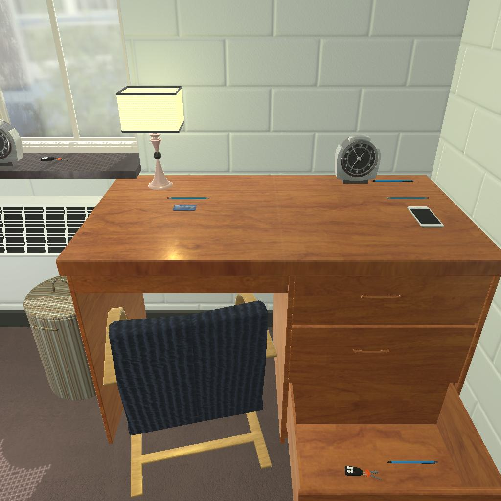
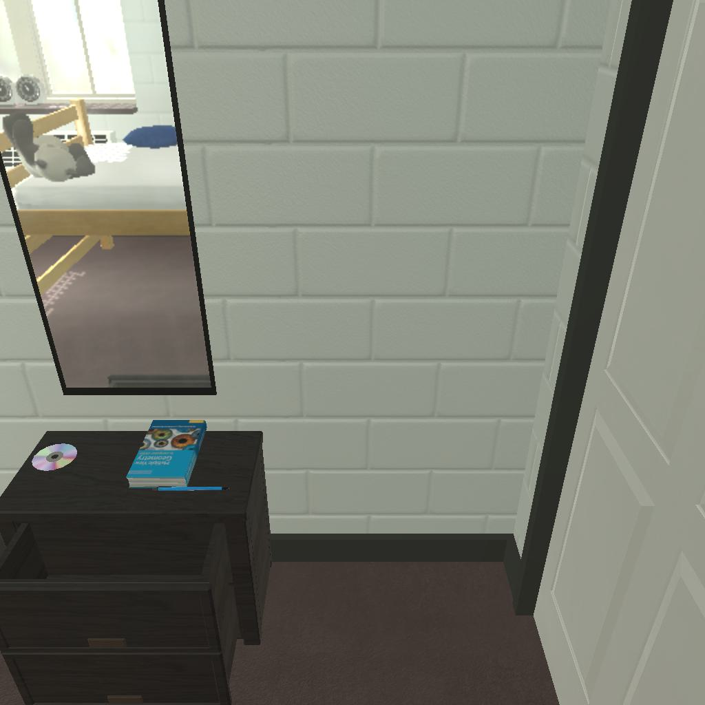

---------------------------------------------------------task: 8---------------------------------------------------------
--------------------------------------------------------------------------------------------------------------------------------------------------------------------
--------------------------------------------------------------------------------------------------------------------------------------------------------------------
Step:--------------------------------------------------------------------------11-------------------------------------------------------------------------------
----------------------------------------
VLM Prompt:
Image1:
Image2:
Image3:
**Instruction**
1. Analyze the provided images to identify all visible household objects and compare the difference between images (e.h. whether the object is opened or not and taken on hand or not), focusing on those relevant to the task description "put some laptop on desk."
2. Use the analysis of images and the task hint "The agent must find an object of the desired type, pick it up, find the correct location to place it, and put it down there." to answer the question: what is the most reasonable action in the choices for the task description "put some laptop on desk"?
3. Decide and write the answer using the template: The answer is: (i): , where i is the real number. If there is no desired object in images, search every place based on **Initial Observation** to find the object. And if no one is exactly correct, choose a similar answer.
**Initial Observation**
You are in the middle of a room. Looking quickly around you, you can see bed (1), garbagecan (1), desk (1), sidetable (1), drawer (1-5), laundryhamper (1)
**Answer Choices**
(1): go to bed 1
(2): go to garbagecan 1
(3): go to desk 1
(4): go to sidetable 1
(5): go to drawer 2
(6): go to laundryhamper 1
(7): go to drawer 3
(8): go to drawer 4
(9): go to drawer 5
(10): open drawer 1
(11): close drawer 1
(12): take book 1 from drawer 1
(13): take cd 1 from drawer 1
(14): take pen 2 from drawer 1
(15): examine drawer 1
**Answer**
Let's think step by step by following the instructions.
----------------------------------------
----------------------------------------
Original Response:
1. Analyzing the images:
- Image 1 and Image 2 show a desk with various objects on it, including a lamp, a clock, and some pens.
- Image 3 shows a sidetable with a CD and a book on it, and a mirror reflecting a bed with a stuffed animal on it.
2. Comparing differences:
- The main difference between Image 1 and Image 2 is that a pen has been moved from the desk to the floor.
- There are no laptops visible in any of the images provided.
- Based on the task description, "put some laptop on desk," we need to find a laptop.
3. Reasoning for the action:
- Since there is no laptop visible on the desk or the sidetable, the laptop might be inside a drawer.
- The task hint suggests finding the object (laptop) and placing it on the desk.
Based on the initial observation, there are multiple drawers that we haven't looked in yet. The most reasonable action would be to start looking in the drawers for the laptop.
The answer is: (10): open drawer 1. If the laptop is not there, continue searching the other drawers.
----------------------------------------
----------------------------------------
>>> Refine Original VLM Response and Get Pure Action: open drawer 1
----------------------------------------
-----------------------------------------------------------------
Running time: 11.915748357772827 seconds
Total Money: 3.8001400000000007
-----------------------------------------------------------------
-----------------------------------------------------------------
Text Observation:Nothing happens.
-----------------------------------------------------------------
UNSUCCEED